Imperium
Imperium Ouskoudama
← all settlements · all regions · wiki index
The settlement of the region of Brenaia, held at the campaign start by Seleucid Rebels (Eastern Hellenistic).
Size: Large town · Population: 2,000 · Buildings: 12
What is already built
| Building chain | Level | Building chain | Level | Building chain | Level | |||
|---|---|---|---|---|---|---|---|---|
| core building | Governor's Villa | 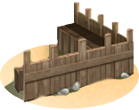 | defenses | Wooden Palisade | food storage | Small Granary (Food trade) | ||
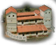 | garrison | Local Garrisons | 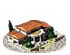 | governmentB | Indirect Rule | health | Cisterns (Sanitation) | |
| hinterland region | Region Information Scroll | 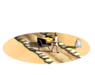 | hinterland roads | Roads | 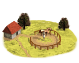 | horse trainer | Horse Trainer (Rural) | |
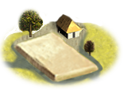 | irrigated farming | Irrigation Ditches (Crops) | 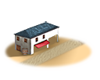 | market | Local Barter | temples standard | Shrine |
What can be recruited here
| Unit | Raised at | Cost | Upkeep | Unit | Raised at | Cost | Upkeep | Unit | Raised at | Cost | Upkeep | |||
|---|---|---|---|---|---|---|---|---|---|---|---|---|---|---|
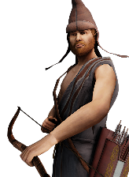 | Thracian Archers | Region Information Scroll | 1,340 | 490 | 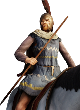 | Thracian Hippakontistai | Region Information Scroll | 1,338 | 539 | 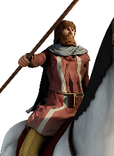 | Thracian Light Lancers | Region Information Scroll | 1,619 | 652 |
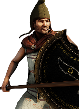 | Thracian Longspearmen | Region Information Scroll | 1,494 | 547 | 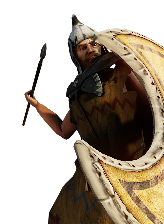 | Thracian Peltasts | Region Information Scroll | 1,141 | 418 | 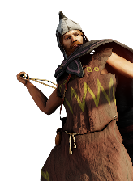 | Thracian Slingers | Region Information Scroll | 1,075 | 393 |
The land around it
Terrain, climate, fertility, water, port, the trade goods placed inside the borders, and the recruitment zones and homeland this ground counts as, are all on Brenaia — stated there once, so the two pages cannot disagree.